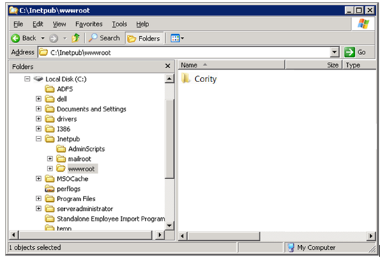

To upgrade the Cority application files, perform the following steps:

Rename web.config.sample, properties.config.sample, logging.config.sample, and server.config.sample to web.config, properties.config, logging.config, and server.config.
Modify the configuration in web.config, properties.config, and if necessary, server.config and logging.config (as described in the subsection ‘Modify the Configuration Files on the Web Server’).
For existing clients, there is a file named utils.config.sample, which contains a sample key. You must create a new utils.config file with the actual key. Note: This key will be provided by Cority Helpdesk.